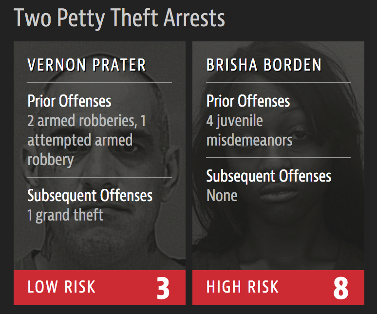

Machine Learning Ethics
Machine Learning for Biomedical Data
Scott Doyle / scottdoy@buffalo.edu
Announcements: Final Assignments
Final Assignment Details
The final assignment and the project writeup will both be available for submission starting next week, and will remain open until May 15.
The final assignment (Homework #3) and the final project writeup are separate assignments and must be submitted separately.
This is a departure from previous years, for obvious reasons; if you have issues with this schedule, please let me know and we will make arrangements.
Final Project Details
Final writeup will be a journal manuscript-style report detailing the project you’ve been working on.
It should be written formally, with a set of sections, references, figures, etc.
The other assignment pages will remain open, so if there’s anything you’re missing, please submit it ASAP!
Final Project: Outline
- Title
- Author List (and affiliations)
- Abstract
- Introduction / Previous Work
- Materials and Methods
- Experimental Setup
- Results
- Discussion / Conclusion
Some Hints
- Intro / Previous Work should include details of any studies that have used this data, including a few citations on the background of the problem.
- Materials / Methods is where you describe your data, any pre-processing steps, your classifiers, what do they do, and why you chose them. This should be in two sections: Supervised vs. Unsupervised.
- Experimental Setup is where you describe the process of classification – cross-validation, train/test splits, etc.
- Results and Discussion can be merged, but this is where you go through all the results that you’ve got so far and what those results mean in the context of your chosen problem.
Overview: Ethics in AI
What We Won’t Cover
“Ethics” is a huge topic, one of the oldest in human philosophy.
Although interesting, we will not discuss:
- Do AI algorithms have “ethics”?
- Are AI personalities like Alexa “alive”? Do they have rights? Personhood?
- Is AI going to take over the world, and/or replace humans?
- Should governments or industry groups regulate AI?
Answering these questions requires expertise and value judgements that are outside the scope of this course.
What We Will Cover
Instead, I will talk about some use cases in AI and some of the ethical concerns that arise from them.
Context
Machine learning / statistical modeling is an old field, but only recently has become a daily-use technology for most of the developed world.
In this lecture I will discuss some specific applications and examples of where Machine Learning fails in ways that are unethical or biased, to provide context for why this is an important issue.
At the end, I will give some suggestions as to what we can do as engineers to mitigate the effects of bias in our systems.
Biased Data
Bias Embedded in Algorithms
Algorithms only know about the universe based on what we show it.
This means that biased data produces biased algorithms.
Misinterpretation vs. Data Bias
Data Fallacies: Interpretations of data that are incorrect or misleading, both intentional and unintentional.
Data Biases: Data collection itself is biased.
Data Fallacies Examples

Data Bias in Image Analysis
Dataset: 33% of cooking images have “Agent: Man”
Algorithm: 16% of images have “Agent: Man”
Data Bias in Image Analysis
The paper tried to “reduce bias” by introducing a gender constraint, so that trained models reflect the gender balance in the training set.
But why is that the goal? Why is the training set 66% women?
The restaurant industry is male-dominated, so why are there more pictures in the dataset of women than men?
Data Bias in Image Analysis
Questions to ask:
- Where and how was the dataset collected? (Social media, cooking shows, cookbooks, publicity photos…)
- Are there any implicit or explicit biases in the collection criteria?
- Is the dataset representative of all cooks, or just a subset of them?
Face Recognition Fails
Data Bias in Language Translation
Data Bias in Language Translation
Bias in Language Translation
Again, questions:
- What text is being used to train the translator algorithm?
- What biases are present in the dataset?
- What biases are present in language?
Are AI algorithms creating biases, or exacerbating existing ones?
Recommendation Systems and Fake News
“Positive” Feedback Loops
Recommendation systems focus on “engagement” (clicks, shares, likes, time-on-site) rather than truthfulness or fairness.
This rewards extreme, emotionally charged, or unusual information, leading AI algorithms to recommend MORE of such information.
Those who want to advertise their ideas know how these algorithms work, and how to game them.
Recommendation Systems: Facebook’s “RoboEditors”
Recommendation Systems: The Good, The Bad, and The Crazy
FTA (From The Article)
David Carroll, associate professor of media design at The New School
“There is an infrastructure built since the Renaissance to ensure the integrity of information and knowledge in libraries, many layers of gatekeepers thick… YouTube dispenses with all of it in the name of frictionless content acquisition and an algorithm optimized for watch-time to sell ads.”
People Aren’t Much Better
Machines learn from the data we feed it, but people learn from the data they get from machines.
How many of you get news from the Internet, rather than a newspaper?
In both cases, what you see is curated by someone else. With newspapers, this tends to be a newsroom and editors. With the Internet, who knows?
News Has Never Been Unbiased, But It Has Been Accountable
Editors of newspapers have always had to consider their business as well as the truth.
However, the key difference is that there was always accountability at the core of a newspaper.
Where is the accountability for Facebook’s participation in propaganda efforts?
And the problem is only getting worse…
DeepFakes and Fake News
FTA
Aviv Ovadya, Chief Technologist, Center for Social Media Responsibility (UMSI)
“What happens when anyone can make it appear as if anything has happened, regardless of whether or not it did?”
Justice System 2.0
Minority Report: Pre-Crime Division
Statistics have long been used in policing, criminal justice, and legal work (not to mention city planning, public policy, lawmaking…)
What happens when statistics are used to predict who, individually, is a criminal risk?
Criminal Prediction is Biased
Risk Assessment Tests
In Arizona, Colorado, Delaware, Kentucky, Louisiana, Oklahoma, Virginia, Washington and Wisconsin, the results of such assessments are given to judges during criminal sentencing.
The use of risk assessment tools, and the errors associated with them, have not been pretty.
FTA
Eric Holder, Former U.S. Attorney General
“Although these measures were crafted with the best of intentions, I am concerned that they inadvertently undermine our efforts to ensure individualized and equal justice… [T]hey may exacerbate unwarranted and unjust disparities that are already far too common in our criminal justice system and in our society.”
Two Crimes, Two Risk Predictions
Two Crimes, Two Risk Predictions

FTA
"In forecasting who would re-offend, the algorithm made mistakes with black and white defendants at roughly the same rate but in very different ways.
- The formula was particularly likely to falsely flag black defendants as future criminals, wrongly labeling them this way at almost twice the rate as white defendants.
- White defendants were mislabeled as low risk more often than black defendants."
The authors obtained a set of 137 questions from one such risk assessment tool, used in Florida. Here are some of the questions defendants might be asked.
Remember: This information will be used to judge whether the defendent is a “risk”.
COMPAS Risk Assessment
COMPAS Risk Assessment
COMPAS Risk Assessment
COMPAS Risk Assessment
Risk Assessment Tools
How are these questions used? What is the model that combines them, how does it work, how was it trained?
Nobody knows. These are proprietary systems, created by for-profit companies, and sold within the legal system as a way to “reduce bias” in sentencing.
Does it seem like they will do that? Do we trust them?
Possible Solutions
Getcha Pitchforks
It’s counter-productive to think that the people who build these systems (or the start companies that then go on to direct engineers to build these systems) are malicious.
However, as engineers and designers, it is our responsibility to make sure that we do all we can to mitigate the negative effects of our tools.
Why Is It Our Responsibility?
Cathy O’Neil, “Weapons of Math Destruction”
“Models are opinions embedded in mathematics…”
“We’re weaponizing math, because people are afraid of math, and they trust math, and they stop asking questions when they see formulas…”
Why It Is Our Responsibility
Our goal should be to make sure that what we understand is made plain for the general public.
We should understand the risks and uncertainties in the algorithms we build.
We should acknowledge our biases and try to correct them – claiming that we are “unbiased” is a sure way to fall victim to biases.
Political Considerations
But wait… why should we care about these things?
What if there really are more male doctors, and more female nurses? What if, statistically, people from single-parent homes really are more likely to commit crimes?
This is an uncomfortable but important question, and gets to the heart of the problem with algorithms and AI when it comes to ethics.
Generalizability vs. Overfitting
First, in fact, biased algorithms do not work.
Description vs. Proscription
Second, there is an ethical standpoint that we should endeavor for everyone to be treated equally and fairly.
People should not be subjected to different treatment based on where they are from or their family situation – things fundamentally out of their control (circumstances of birth).
Black Mirror, Anyone?
Third, we have to recognize that error and bias in AI algorithms may reflect biases in our society in ways that are bigger than any one engineer can handle.
These should be exposed, discussed, explained, corrected for, but most importantly, we should take it as a sign that any one understanding of the world may be incomplete.
“I was just following orders…”
Keep in mind: Just because you are an engineer on a larger project does NOT let you off the hook…
VW Executive Sentenced to Jail
FTA
In a letter to the judge published earlier this week, [Oliver] Schmidt said he felt like he was “misused” by VW in the diesel scandal. He argued that he was following a script written by the company’s management and one of its lawyers when he lied to the California Air Resources Board about the compliance of VW’s cars with US regulations, and that he had come on board after the scheme was devised.